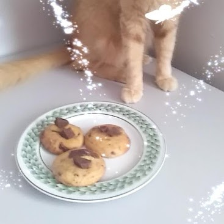

Chocolate Chip Cookies

Description
Everyone needs a classic chocolate cookie recipe in their repertoire, and this is mine. It is seriously the Best Chocolate Chip Cookie Recipe Ever!
Total time: 30 minutes Cuisine: American
Calories: 183kcal Author: JoyFoodSunshine
Ingredients
- 227 g salted butter softened
- 232 g granulated sugar
- 213 g light brown sugar packed
- 1 tsp pure vanilla extract
- 2 large eggs
- 410 g all-purpose flour
- 1 tsp baking soda
- 1/2 tsp baking powder
- 1 tsp sea salt
- 396 g chocolate chips
Steps
- Preheat oven to 375 F/190 C.
- In a medium bowl mix flour, baking soda, baking powder and salt. Set aside.
- Cream together butter and sugars until combined.
- Beat in eggs and vanilla until light (about 1 minute).
- Mix in the dry ingredients until combined.
- Add chocolate chips and mix well.
- Roll 2-3 tablespoons (depending how big you like your cookies) of dough at a time into balls and place them evenly spaced on your prepared cookie sheets.
- Bake in preheated oven for approximately 8-10 minutes. Take them out when they are just barely starting to turn brown.
- Let them sit on the baking pan for 5 minutes before removing to cooling rack.
- Enjoy!
Life is too uncertain to take a minute for granted. Spread love, make cookies. That's my motto!